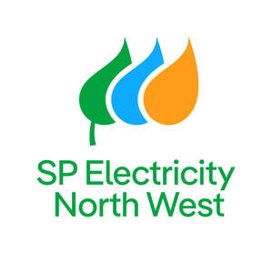

Trade Mark Journal No.2025/026 27 June 2025
UK00004220329 17 June 2025 (4,9,35,37,39,40,42)

- Class 4
- Electrical energy; electrical energy from renewable sources; electrical energy from non-renewable sources; natural gas; fuel gas.
- Class 9
- Apparatus for measuring, monitoring and analyzing electricity consumption; computer software for measuring, monitoring and analyzing electricity consumption; mobile apps for measuring, monitoring and analyzing electricity consumption; mobile applications for the management of electric vehicle charging stations; smart home automation electronic devices; electronic devices and computer software that allow users to remotely interact with environmental monitoring, control, and automation systems; electronic devices and computer software that allow the sharing and transmission of data and information between devices for the purposes of facilitating environmental monitoring, control, and automation; electric sensors; electronic sensors; electronic surveillance equipment and monitoring modules to monitor power consumption; electric control devices for energy management; electronic device software drivers that allow computer hardware and electronic devices to communicate with each other; systems and software for switching and regulating energy consumers; systems and software for switching and regulating electricity consumers; systems and software for switching and regulating power generators; systems and software for switching and regulating energy generators; systems and software for remote monitoring of technical systems; systems and software for remote monitoring of power supply devices; computer programs for information, analyzing and reporting of energy use, energy efficiency, energy saving, cost analysis, administration, energy analysis, invoice management, ecological reports, analysis of environmental influence, trend reporting and alarm systems; electronic security systems; software to control building environmental, access and security systems; charging stations for electric vehicles; battery charging devices for motor vehicles; computer software and mobile apps for analyzing and managing energy distribution, consumption and storage; computer programs for information, analyzing and reporting of energy use, energy efficiency, energy saving, cost analysis; home automation software; wireless-operated apparatus for reading data from (smart) meters; smart meters; downloadable virtual goods for use online and in online virtual worlds, namely, downloadable computer software for interactive games over a global computer network, over wireless networks and through electronic devices; downloadable software for engaging in social networking and interacting with online communities; downloadable software for accessing and streaming multimedia entertainment content; downloadable software for providing access to an online virtual environment; downloadable multimedia files containing the following goods: artwork, texts, audio and video files, all the aforesaid goods authenticated by non-fungible tokens (nfts); downloadable virtual goods, namely computer programs featuring the following goods: electrical energy, electrical energy from renewable sources, electrical energy from non-renewable sources, natural gas, fuel gas, apparatus for measuring, monitoring and analyzing electricity consumption, smart home automation electronic devices, electronic devices that allow users to remotely interact with environmental monitoring, control, and automation systems, electronic devices that allow the sharing and transmission of data and information between devices for the purposes of facilitating environmental monitoring, control, and automation, electric sensors, electronic sensors, electronic surveillance equipment and monitoring modules to monitor power consumption, electric control devices for energy management, electronic device software drivers that allow computer hardware and electronic devices to communicate with each other, systems for switching and regulating energy consumers, systems for switching and regulating electricity consumers, systems for switching and regulating power generators, systems for switching and regulating energy generators, systems for remote monitoring of technical systems, systems for remote monitoring of power supply devices, electronic security systems, charging stations for electric vehicles, battery charging devices for motor vehicles, wireless-operated apparatus for reading data from (smart) meters, smart meters, apparatus for lighting, heating, steam generating, cooking, refrigerating, drying, ventilating, water supply and sanitary purposes for use in solar-thermal or photovoltaic installations, pressure water tanks, flushing tanks, hot water cylinders, heating boilers, long-term heat accumulators, solar heat collectors, heat accumulators, heat pumps, solar collectors [heating], solar furnaces, solar thermal collectors [heating], solar energy powered heating installations, thermal storage instruments [solar energy] for heating, thermal storage instruments [solar energy] for heating, heat pumps, roof panels for solar thermal and photovoltaic collectors [heating] (none of metal), solar installations for heat generation, electric vehicles, electric bicycles, all the aforesaid goods for use online and in online virtual worlds; downloadable computer software for interactive games; downloadable computer software for the creation, production and modification of animated and non-animated digital designs, artwork, characters, avatars, overlays and digital skins for access to and use in online environments, online virtual environments and extended reality virtual environments.
- Class 35
- Billing services in the field of energy; energy price comparison services; advertising and advertisement services relating to electrical energy; collection and systematization of information into computer databases; database marketing; data compilation for others; loyalty, incentive and bonus program services; customer loyalty services for commercial, promotional and/or advertising purposes; sales promotion through customer loyalty programs; assistance and consultancy services in the field of business management in the energy sector; collection of data; the bringing together, for the benefit of others, of retail electricity supplier services, enabling customers to conveniently view and purchase those services; promotion of goods and services through sponsorship of sports events; online retail services in relation to downloadable virtual goods, namely: electrical energy, electrical energy from renewable sources, electrical energy from non-renewable sources, natural gas, fuel gas, apparatus for measuring, monitoring and analyzing electricity consumption, smart home automation electronic devices, electronic devices that allow users to remotely interact with environmental monitoring, control, and automation systems, electronic devices that allow the sharing and transmission of data and information between devices for the purposes of facilitating environmental monitoring, control, and automation, electric sensors, electronic sensors, electronic surveillance equipment and monitoring modules to monitor power consumption, electric control devices for energy management, electronic device software drivers that allow computer hardware and electronic devices to communicate with each other, systems for switching and regulating energy consumers, systems for switching and regulating electricity consumers, systems for switching and regulating power generators, systems for switching and regulating energy generators, systems for remote monitoring of technical systems, systems for remote monitoring of power supply devices, electronic security systems, charging stations for electric vehicles, battery charging devices for motor vehicles, wireless-operated apparatus for reading data from (smart) meters, smart meters, apparatus for lighting, heating, steam generating, cooking, refrigerating, drying, ventilating, water supply and sanitary purposes for use in solar-thermal or photovoltaic installations, pressure water tanks, flushing tanks, hot water cylinders, heating boilers, long-term heat accumulators, solar heat collectors, heat accumulators, heat pumps, solar collectors [heating], solar furnaces, solar thermal collectors [heating], solar energy powered heating installations, thermal storage instruments [solar energy] for heating, thermal storage instruments [solar energy] for heating, heat pumps, roof panels for solar thermal and photovoltaic collectors [heating] (none of metal), solar installations for heat generation, electric vehicles, electric bicycles, the aforesaid goods for use online in online virtual worlds; online retail services in relation to downloadable virtual goods authenticated by non-fungible tokens, namely: electrical energy, electrical energy from renewable sources, electrical energy from non-renewable sources, natural gas, fuel gas, apparatus for measuring, monitoring and analyzing electricity consumption, smart home automation electronic devices, electronic devices that allow users to remotely interact with environmental monitoring, control, and automation systems, electronic devices that allow the sharing and transmission of data and information between devices for the purposes of facilitating environmental monitoring, control, and automation, electric sensors, electronic sensors, electronic surveillance equipment and monitoring modules to monitor power consumption, electric control devices for energy management, electronic device software drivers that allow computer hardware and electronic devices to communicate with each other, systems for switching and regulating energy consumers, systems for switching and regulating electricity consumers, systems for switching and regulating power generators, systems for switching and regulating energy generators, systems for remote monitoring of technical systems, systems for remote monitoring of power supply devices, electronic security systems, charging stations for electric vehicles, battery charging devices for motor vehicles, wireless-operated apparatus for reading data from (smart) meters, smart meters, apparatus for lighting, heating, steam generating, cooking, refrigerating, drying, ventilating, water supply and sanitary purposes for use in solar-thermal or photovoltaic installations, pressure water tanks, flushing tanks, hot water cylinders, heating boilers, long-term heat accumulators, solar heat collectors, heat accumulators, heat pumps, solar collectors [heating], solar furnaces, solar thermal collectors [heating], solar energy powered heating installations, thermal storage instruments [solar energy] for heating, thermal storage instruments [solar energy] for heating, heat pumps, roof panels for solar thermal and photovoltaic collectors [heating] (none of metal), solar installations for heat generation, electric vehicles, electric bicycles, the aforesaid goods for use online in online virtual worlds; online retail services in relation to: downloadable virtual reality content and downloadable digital media, namely: downloadable digital pre-recorded music, downloadable digital video, downloadable digital images, downloadable digital text, downloadable digital audio-visual works and downloadable virtual and augmented reality game software; providing an online marketplace for buyers and sellers, in relation to the following downloadable digital goods: electrical energy, electrical energy from renewable sources, electrical energy from non-renewable sources, natural gas, fuel gas, apparatus for measuring, monitoring and analyzing electricity consumption, smart home automation electronic devices, electronic devices that allow users to remotely interact with environmental monitoring, control, and automation systems, electronic devices that allow the sharing and transmission of data and information between devices for the purposes of facilitating environmental monitoring, control, and automation, electric sensors, electronic sensors, electronic surveillance equipment and monitoring modules to monitor power consumption, electric control devices for energy management, electronic device software drivers that allow computer hardware and electronic devices to communicate with each other, systems for switching and regulating energy consumers, systems for switching and regulating electricity consumers, systems for switching and regulating power generators, systems for switching and regulating energy generators, systems for remote monitoring of technical systems, systems for remote monitoring of power supply devices, electronic security systems, charging stations for electric vehicles, battery charging devices for motor vehicles, wireless-operated apparatus for reading data from (smart) meters, smart meters, apparatus for lighting, heating, steam generating, cooking, refrigerating, drying, ventilating, water supply and sanitary purposes for use in solar-thermal or photovoltaic installations, pressure water tanks, flushing tanks, hot water cylinders, heating boilers, long-term heat accumulators, solar heat collectors, heat accumulators, heat pumps, solar collectors [heating], solar furnaces, solar thermal collectors [heating], solar energy powered heating installations, thermal storage instruments [solar energy] for heating, thermal storage instruments [solar energy] for heating, heat pumps, roof panels for solar thermal and photovoltaic collectors [heating] (none of metal), solar installations for heat generation, electric vehicles, electric bicycles; providing an online marketplace for buyers and sellers, in relation to the following downloadable virtual goods authenticated by non-fungible tokens: electrical energy, electrical energy from renewable sources, electrical energy from non-renewable sources, natural gas, fuel gas, apparatus for measuring, monitoring and analyzing electricity consumption, smart home automation electronic devices, electronic devices that allow users to remotely interact with environmental monitoring, control, and automation systems, electronic devices that allow the sharing and transmission of data and information between devices for the purposes of facilitating environmental monitoring, control, and automation, electric sensors, electronic sensors, electronic surveillance equipment and monitoring modules to monitor power consumption, electric control devices for energy management, electronic device software drivers that allow computer hardware and electronic devices to communicate with each other, systems for switching and regulating energy consumers, systems for switching and regulating electricity consumers, systems for switching and regulating power generators, systems for switching and regulating energy generators, systems for remote monitoring of technical systems, systems for remote monitoring of power supply devices, electronic security systems, charging stations for electric vehicles, battery charging devices for motor vehicles, wireless-operated apparatus for reading data from (smart) meters, smart meters, apparatus for lighting, heating, steam generating, cooking, refrigerating, drying, ventilating, water supply and sanitary purposes for use in solar-thermal or photovoltaic installations, pressure water tanks, flushing tanks, hot water cylinders, heating boilers, long-term heat accumulators, solar heat collectors, heat accumulators, heat pumps, solar collectors [heating], solar furnaces, solar thermal collectors [heating], solar energy powered heating installations, thermal storage instruments [solar energy] for heating, thermal storage instruments [solar energy] for heating, heat pumps, roof panels for solar thermal and photovoltaic collectors [heating] (none of metal), solar installations for heat generation, electric vehicles, electric bicycles; online retail services in relation to: virtual reality and augmented reality hardware and software.
- Class 37
- Installation, repair and maintenance of electric power stations, electricity distribution networks and power transformer stations; installation, repair and maintenance of networks for the distribution of gas, electricity and any other source of electric power; installation, repair and maintenance of apparatus and devices for controlling energy consumption, apparatus for lighting, heating, steam production, cooking, freezing, drying and ventilating purposes, regulating and security fittings, feeding apparatus for heating boilers, gas purifying apparatus, boilers and gas igniters; providing of information relating to the aforesaid activities; installation, repair and maintenance of apparatus and machines for the automated control of lighting, temperature, security and telecommunications in buildings; construction, installation, repair and maintenance of electric power stations and buildings and installations therefor; charging of electric vehicles; installation, repair and maintenance of charging stations for electric vehicles.
- Class 39
- Transport, distribution, supply and storage of electricity and energy; rental of electric cars; rental of apparatus for conducting, switching and accumulating electricity; rental of apparatus for conducting and accumulating gas; rental of gas distribution apparatus.
- Class 40
- Energy production; electricity generating; leasing of energy generating equipment; recycling of waste and trash; treatment and processing of waste and residues; water treating; assembly of products for others, namely, assembly of apparatus and machines for the automated control of lighting, temperature, security and telecommunications in buildings.
- Class 42
- Programming of energy management software, advisory services relating to energy consumption and efficiency; Computer programming for the energy industry, Engineering services relating to energy supply systems; Design and development of energy management software; Development of energy and power management systems; Design and development of energy distribution networks; Recording data relating to energy consumption in buildings; Technical advice in connection with energy-saving measures; Engineering services in the field of energy technology; Advisory services relating to the use of energy; Design and development of regenerative energy generation systems, Providing technical advice relating to energy-saving measures; Technological consulting services in the field of alternative energy generation; Technological consultancy in the fields of energy production and use; Consultancy relating to technological services in the field of power and energy supply; design and development of software for control, regulation and monitoring of electric energy systems; provision of information concerning research and technical project studies relating to the use of electrical energy; Engineering project management services; technical monitoring and evaluation and consultancy in the field of measuring electrical energy; Consultancy in the field of energy saving and energy efficiency; Research and analysis in the field of energy; Certification services for the energy efficiency of buildings; Technological analysis relating to energy and power needs of others; Providing temporary use of on-line non-downloadable operating software for accessing and using a cloud computing network; Design and development of operating software for accessing and using a cloud computing network; Drawing up of studies, reports, projects and assessments, all being technical in nature, relating to gas, electricity and any other sources of energy; Calibration [measuring]; Energy auditing; Engineering services; Conducting technical project studies; Research, development and design of electric power stations; Consultancy in the field of energy use and energy efficiency management.
Iberdrola, S.A.
Representative: Gill & Gill